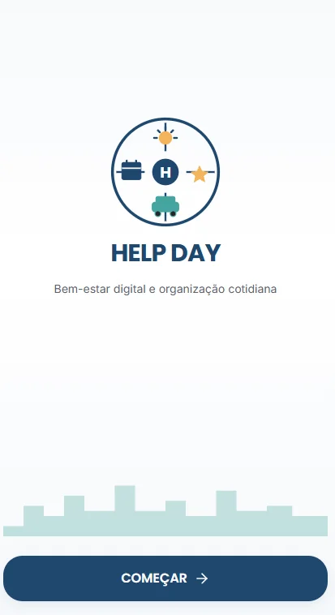
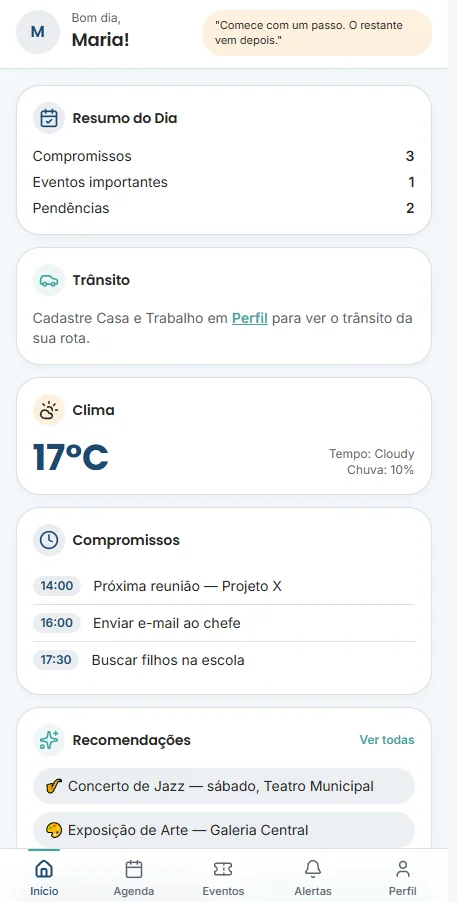
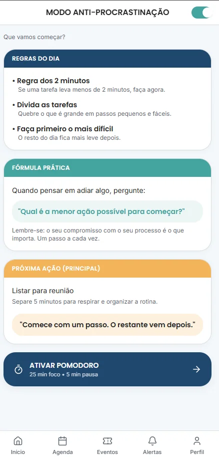

HelpDay
Projeto em equipeAplicação web desenvolvida no Lovable que funciona como assistente pessoal para organizar o dia a dia. Com uso de APIs, gera alertas sobre o tempo e o trânsito e sugere eventos para o tempo livre.
Equipe
- Amanda Beatriz Andrade Baía
- Laís Honório de Melo
- Luiz Felipe da Silva Cabral
- Ronald Jones de Melo Gomes Farias
- Poliana Ferreira Vieira de Melo


